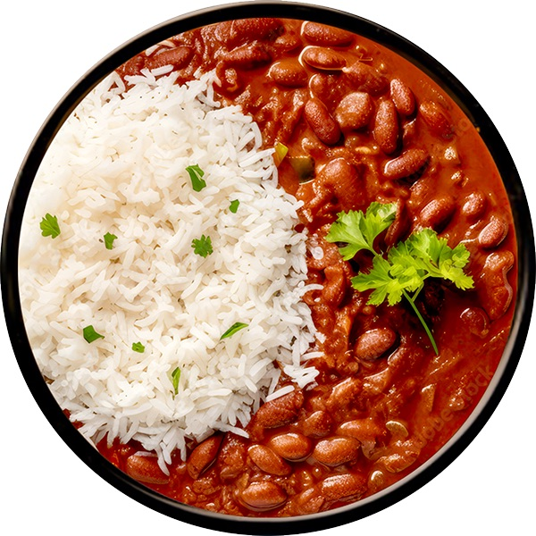

Home
Rajma Rice

Description
Rajma chawal or rajma rice is delicious rajma masala (red kidney beans masala) mixed with rice, a comfort food for many who grew up eating this great combination of carbs and protein.
Ingredients
- 1 cup rajma, 1 cup rice
- 2 tbsp oil, 1 tbsp ghee
- 1 tsp mustard
- 2 dried green chilli
- few curry leaves, 1 large onion, halves
- garlic, ginger, chopped
- 15 piece drumstick
- 6 beans, chopped
- 1 tomato, chopped
- ½ tsp turmeric, 1 tsp salt, 1 cup tamarind extract, water, as required
Steps
- Soak the rajma (kidney beans) for at least 8 hours or overnight. Pressure cook for 5-6 whistles until soft yet not mushy. Set aside.
- Heat oil and add the cumin seeds. When they sizzle and begin to change colour, add the onions. When they turn pink, add the powdered cinnamon, ginger, and green chillies. Fry for 2-3 mins.
- Then add the coriander powder, amchur or tamarind, and turmeric. Mix well and cook for another 3-4 mins. My onion-masala mixture is red because I used red chilli powder instead of green chillies.
- Add the cooked rajma along with the water used to cook it in and the sliced tomato. Mix well and let simmer for 5 mins.
- When the gravy thickens a bit, add the chaat masala and salt. Mix well, bring to boil again and turn off heat.
- Garnish with chopped coriander leaves (cilantro) and serve warm with some plain yogurt.
- Steam rice goes well along with it, adding a 1 spoon of ghee.